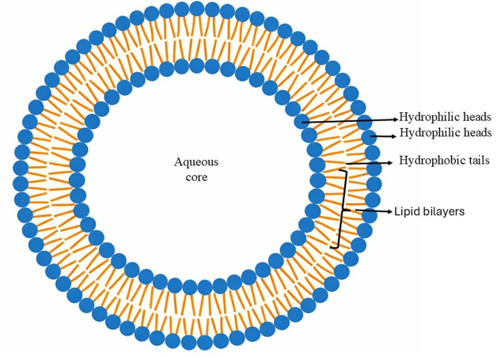

리포좀 (Liposome)

| # | 원문 | 한국어 |
|---|---|---|
| 1 | Aqueous core | 수용액 핵심부 |
| 2 | Hydrophilic heads (안쪽 층) | 친수성 머리 |
| 3 | Hydrophilic heads (바깥쪽 층) | 친수성 머리 |
| 4 | Hydrophobic tails | 소수성 꼬리 |
| 5 | Lipid bilayers | 지질 이중층 |
쉽게 풀면
리포좀은 우리 피부의 세포막과 비슷한 지질 이중층 구조로 만들어진 아주 작은 물풍선이라고 생각하면 이해하기 쉽다. 막이 세포막과 유사한 성분으로 이루어져 있어 피부 세포와 잘 어우러지며, 안쪽 물 공간에는 수용성 유효성분을, 지질층 사이에는 지용성 유효성분을 함께 담을 수 있다. 이 덕분에 불안정하거나 흡수가 어려운 성분을 감싸 보호하고 피부까지 전달하는 운반체로 화장품에 활용된다.
왜 중요한가
리포좀은 세포막과 유사한 구조 덕분에 생체 적합성이 우수하고, 불안정한 활성성분을 보호하면서 피부 전달 효율을 높이는 캡슐화 기술로 화장품학에서 중요하게 연구된다. 특히 비타민, 항산화 성분처럼 산화되기 쉬운 원료의 안정화에 널리 활용된다. 리포좀의 막 구성 지질을 피부 각질층의 지질 구성과 유사하게 설계하면, 각질층과 융합되며 성분을 전달하는 효율이 높아지는 것으로 연구되어 전달체 설계의 주요 변수로 다뤄진다.
무엇이고 어디서 작용하나
- 리포좀은 하나 이상의 지질 이중층으로 이루어진 구형의 인공 소포이다. 막은 주로 인지질(특히 포스파티딜콜린)과 콜레스테롤로 만들고, 안쪽에는 수용액 핵심부가 있다.
- 물에 녹는 물질은 안쪽 수용액 공간에, 기름에 녹는 물질은 이중층에 자리 잡는다.
- 나노 규모의 것은 나노리포좀이라 부르며, 이중층을 나선형으로 말아 원통 모양으로 만든 것은 나노코클레이트이다.
- 1961년 영국 배브러햄 연구소의 알렉 더글러스 뱅엄이 처음 기술했고 결과는 1964년에 발표되었다.
주요 기능과 기전
| 분류 기준 | 종류 |
|---|---|
| 층 수 | 다층 소포(MLV)와 단층 소포(SUV·LUV·GUV 등) |
| 크기 | 작은 단층(SUV)에서 거대 단층(GUV)까지, 크기는 마이크로미터 아래에서 수십 마이크로미터에 이른다 |
| 봉입 방식 | 수동 봉입(형성 중에 가둔다)과 능동 봉입(하전 지질이나 막 이온 기울기를 쓴다) |
봉입 효율은 최종 리포좀 용액에 든 화합물의 양을 처음에 넣은 전체 양으로 나눈 값이다. 막을 PEG로 덮은 스텔스 리포좀은 혈중 순환 시간을 늘린다.
연구에서 다루는 방식
제조는 양친매성 지질을 물에서 초음파 처리하는 방법이 가장 단순하지만 봉입물이 손상될 수 있다. 낮은 전단 속도에서는 다층 리포좀이 생긴다. 압출, 에탄올 주입, 마이크로믹서, 미세유체 혼합 같은 방법은 재현성이 높다.
| 적용 | 사례 |
|---|---|
| 약물 전달 | 독소루비신 리포좀(Doxil), 다우노루비신, 리포좀 암포테리신 B(AmBisome, 1997년 FDA 승인) |
| 유전자 전달 | 리포펙션 |
| 피부 적용 | 화장품 |
| 그 밖의 용도 | 영양 보충제, 섬유 염료, 농약, 초음파 조영제 |
한계도 있다. 세포막과의 융합은 복잡하고 저절로 일어나지 않으며, 작은 단층 리포좀은 불안정한 경우가 많다. pH로 방출을 조절하는 방식은 pKa가 맞는 약물에만 쓸 수 있고, PEG 처리 리포좀을 반복 투여하면 항체가 생겨 혈중에서 더 빨리 제거될 수 있다.
논문에서는 이렇게 쓰입니다
실제 논문에서
국내 학술지 논문에서 이 용어가 쓰인 문장을 그대로 옮겼다. 제목·학술지·연도와 원문 링크를 함께 적었다.
“리포좀은 인지질 이중층을 기반으로 항산화제 보호와 계면 인근 분포를 가능하게 하는 구조적 기반을 제공함으로써, 천연 항산화제가 지니는 이러한 기능적 한계를 보완할 수 있다.”
수중유적 에멀전 식품의 산화 제어를 위한 리포좀 기반 항산화제 전달 기술((총설), 동물자원연구, 2025 · KCI 한국학술지인용색인 · 원문 보기 ↗
“폴리디아세틸렌 리포좀 제조 후에자외선을 조사하여 고분자성 리포좀을 제조한 후, 유전자의 전달 효율을 높이기 위해 폴리에틸렌이민을 리포좀 표면에 커플링제를 이용하여 공유결합시켜서 PCDA-PEI 리포좀을 합성하였다.”
폴리디아세틸렌 리포좀 표면에 저분자량의 폴리에틸렌이민을 연결한 새로운 유전자 전달체 합성 및 특징 연구, 폴리머, 2014 · KCI 한국학술지인용색인 · 원문 보기 ↗
“추출물을 3차 정제수에 용해시킨 제형보다 리포좀으로 캡슐화한 제형에서 particle size의 zeta potential의 절댓값 증가를 확인하여 제형 안정성을 확인하였고, 경진투과도의 증진 또한 확인하였다.”
초임계 대마종자 추출물의 화장품 효능과 경피흡수증진 효과, 문화기술의 융합, 2021 · KCI 한국학술지인용색인 · 원문 보기 ↗
조금 더 깊게 보면
리포좀은 주로 인지질(예: 레시틴)을 수용액에 분산시켜 초음파 처리, 압출, 박막수화법 등의 방법으로 제조된다. 막의 층 수에 따라 단일층(unilamellar)과 다층(multilamellar) 리포좀으로 구분되며, 봉입 효율과 안정성은 지질 조성과 제조 방법에 크게 좌우된다. 리포좀은 막을 구성하는 인지질의 상전이온도보다 낮은 온도에서는 막이 젤 상태로 굳어 있어 봉입된 성분의 누출이 적지만, 그 온도를 넘어서면 막이 유동적인 액정 상태로 바뀌어 방출 속도가 빨라지는 온도 의존적 거동을 보인다.
주의할 점
리포좀은 제조 후 시간이 지나면서 막의 산화나 융합으로 인해 안정성이 저하될 수 있어, 실제 화장품 처방에서는 보관 조건과 유통기한 관리가 중요하다. 리포좀은 제조 직후에도 일부 봉입 성분이 새어나갈 수 있어, 봉입 효율을 100%로 가정하지 않고 실제 정량 분석을 통해 확인하는 것이 일반적이다. 리포좀은 피부에 도달하기 전 제형 내 다른 성분(고농도 전해질, 강한 계면활성제 등)과 섞이는 과정에서도 막 구조가 파괴될 수 있어, 전체 처방과의 상용성을 함께 검토해야 한다.
참고 문헌
- Wikipedia contributors. (n.d.). Liposome. Wikipedia.
- Wikipedia contributors. (n.d.). Lipid bilayer. Wikipedia.